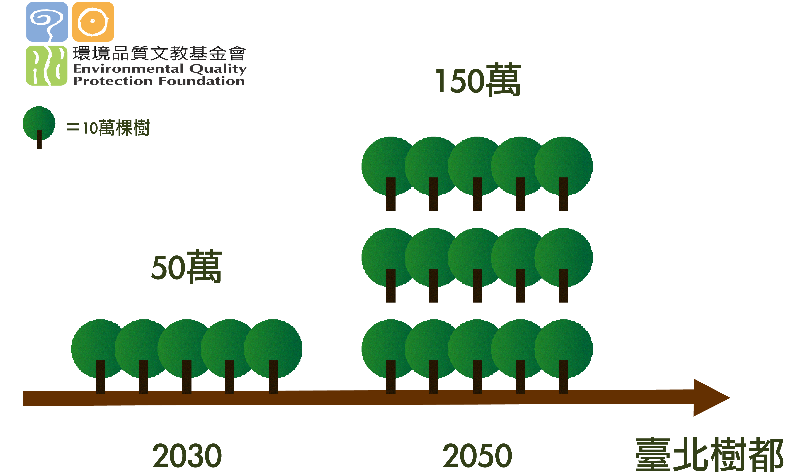

<!doctype html>
<html lang="en">

<head>
  <title>你家旁邊有綠地？尋找台北的樹與綠< /title>
    <meta charset="utf-8">
    <meta name="viewport" content="width=device-width, initial-scale=1, shrink-to-fit=no">
    <link rel="stylesheet" href="https://maxcdn.bootstrapcdn.com/bootstrap/4.0.0-beta.2/css/bootstrap.min.css" integrity="sha384-PsH8R72JQ3SOdhVi3uxftmaW6Vc51MKb0q5P2rRUpPvrszuE4W1povHYgTpBfshb" crossorigin="anonymous">
    <link rel="stylesheet" href="css/main.css">
    <link rel="stylesheet" href="css/font.css">
    <link href="https://fonts.googleapis.com/css?family=Noto+Sans+TC&display=swap&subset=chinese-traditional" rel="stylesheet">
    <style>
      #div1 {
        background-image: url(assets/pt2air.png);
      }

      #div2 {
        background-image: url(assets/pt2noisy.png);
      }

      #div3 {
        background-image: url(assets/pt2cool.png);
      }

      #div_pt2_01 {
        background-image: url(assets/poorcut2.svg);
      }

      #div_pt2_02 {
        background-image: url(assets/richcut2.svg);
      }

      #div_pt2_03 {
        background-image: url(assets/greennoteasy.svg);
      }

      #div4 {
        background-image: url(assets/pt2bicyle.png);
      }

      #div5 {
        background-image: url(assets/pt2social.png);
      }

      #div6 {
        background-image: url(assets/pt2healthy.png);
      }

      #div65 {
        background-image: url(assets/greenarea.png);
      }

      #div7 {
        background-image: url(assets/newyork2.png);
      }

      #div8 {
        background-image: url(assets/seoul2.png);
      }

      #div9 {
        background-image: url(assets/singapore2.png);
      }

      #div10 {
        background-image: url(assets/findmytokyo2.png);
      }

      #div11 {
        background-image: url(assets/taipei2.png);
      }

      #div115 {
        background-image: url(assets/greeningrate.png);
      }

      #div12 {
        background-image: url(assets/61.png);
      }

      #div13 {
        background-image: url(assets/62.png);
      }

      #div14 {
        background-image: url(assets/63.png);
      }

      #div15 {
        background-image: url(assets/64.png);
      }

      #div16 {
        background-image: url(assets/65.png);
      }

      #div17 {
        background-image: url(assets/66.png);
      }

      #div18 {
        background-image: url(assets/67.png);
      }

      #div1,
      #div2,
      #div3,
      #div_pt2_01,
      #div_pt2_02,
      #div_pt2_03,
      #div4,
      #div5,
      #div6,
      #div65,
      #div7,
      #div8,
      #div9,
      #div10,
      #div11,
      #div115,
      #div12,
      #div13,
      #div14,
      #div15,
      #div16,
      #div17,
      #div18 {
        background-attachment: fixed;
        background-position: center;
        background-repeat: no-repeat;
        background-size: cover;
      }
    </style>
    <script src="https://code.jquery.com/jquery-3.2.1.js"></script>
    <script src="https://cdnjs.cloudflare.com/ajax/libs/popper.js/1.12.3/umd/popper.min.js" integrity="sha384-vFJXuSJphROIrBnz7yo7oB41mKfc8JzQZiCq4NCceLEaO4IHwicKwpJf9c9IpFgh" crossorigin="anonymous"></script>
    <script src="https://maxcdn.bootstrapcdn.com/bootstrap/4.0.0-beta.2/js/bootstrap.min.js" integrity="sha384-alpBpkh1PFOepccYVYDB4do5UnbKysX5WZXm3XxPqe5iKTfUKjNkCk9SaVuEZflJ" crossorigin="anonymous"></script>

</head>

<body>
  <div class="container-fluid" id=base>

    <div class="opening embed-responsive embed-responsive-16by9" style="background-color: #D5FC82">
      <video loop="true" playsinline="" autoplay="autoplay" muted="true" tabindex="0" class="part01" src="assets/opening.mp4"></video>

      <div class="title-block part01">
        <h2 class="part01">數位專題</h2>
        <h1 class="part01">你家旁邊有綠地？</h1>
        <h3 class="part01">尋找台北的樹與綠</h3>
        <h4 class="part01">更新時間: 2021.01.12.</h4>
      </div>

    </div>

    <div class="part02">
      <div class="big-title sticky-top">
        <h2>你對家的想像是？</h2>
      </div>
      <div id="div_pt2_01" style="min-height:80vh;background-attachment: fixed;padding:3px; height: auto;">
        <p></p>
      </div>
      <div id="div_pt2_02" style="min-height:80vh;background-attachment: fixed;padding:3px; height: auto;">
        <p></p>
      </div>
      <div id="div_pt2_03" style="min-height:80vh;background-attachment: fixed;padding:3px; height: auto;">
        <p></p>
      </div>
      <!--<div style="background-image: url(assets/4icon.svg);min-height:80vh;background-attachment: fixed;padding:3px; height: auto;">
      </div>-->

    </div>

    <div class="mid-text">
      <p>購屋者對房屋條件各有偏好，那他們有辦法享受綠地嗎？</p>
    </div>

    <div class="">
      <iframe seamless src="https://dennishi0925.github.io/webStoryTelling/gg.html" width="100%" height="500"></iframe>
    </div>

    <div class="mid-text">
      <p>看到綠地不均等情形，但為什麼該在乎綠地？</p>
    </div>

    <div class="container-fluid;" style="background-image: url(assets/part2bgnew2.png)">
      <div class="sticky-top">
        <div class="big-title sticky-top">
          <h2>如果住家鄰近綠地，會有什麼好處？</h2>
        </div>
      </div>

      <div class="container-fluid" style="background-color: aqua;width:200vh;position:relative;"></div>

      <div id="div1" class="container-fluid" style="background-size: 100vh 70vh;height:100vh;width:200vh;position:relative;"></div>

      <div id="div2" class="container-fluid" style="background-size: 100vh 70vh;height:100vh;width:200vh;position:relative;"></div>

      <div id="div3" class="container-fluid" style="background-size: 100vh 70vh;height:100vh;width:200vh;position:relative;"></div>

      <div id="div4" class="container-fluid" style="background-size: 100vh 70vh;height:100vh;width:200vh;position:relative;"></div>

      <div id="div5" class="container-fluid" style="background-size: 100vh 70vh;height:100vh;width:200vh;position:relative;"></div>

      <div id="div6" class="container-fluid" style="background-size: 100vh 70vh;height:100vh;width:200vh;position:relative;"></div>

      <div class="container-fluid" style=" background-size: 50vh 70vh;height:100vh;width:200vh;position:relative;"></div>

    </div>
    <div class="mid-text">
      <p>如果綠地有那麼多好處，那麼台北市的表現又是如何？</p>
    </div>

    <div>
      <div id="div65" class="container-fluid" style="background-size: 115vh 80vh;height:100vh;width:200vh;">
      </div>
      <div id="div7" class="container-fluid" style="background-size: 115vh 80vh;height:100vh;width:200vh;">
      </div>
      <div id="div8" class="container-fluid" style="background-size: 115vh 80vh;height:100vh;width:200vh;">
      </div>
      <div id="div9" class="container-fluid" style="background-size: 115vh 80vh;height:100vh;width:200vh;">
      </div>
      <div id="div10" class="container-fluid" style="background-size: 115vh 80vh;height:100vh;width:200vh;">
      </div>
      <div id="div11" class="container-fluid" style="background-size: 115vh 80vh;height:100vh;width:200vh;">
      </div>
    </div>
    <div class="mid-text">
      <p>跟國際各大城市相比，台北市的人均綠地不高。如果是在台灣的六都裡面，台北市排名又是如何？</p>
    </div>
    <div class="container-fluid;" style="background-image: url(assets/greenratebackgrand2.png)">
      <div>

        <div class="sticky-top">
          <div id="div115" class="container-fluid" style="background-size: 115vh 80vh;height:100vh;width:200vh;"> </div>
          <div id="div12" class="container-fluid" style="background-size: 115vh 80vh;height:100vh;width:200vh;"> </div>
          <div id="div13" class="container-fluid" style="background-size: 115vh 80vh;height:100vh;width:200vh;"> </div>
          <div id="div14" class="container-fluid" style="background-size: 115vh 80vh;height:100vh;width:200vh;"> </div>
          <div id="div15" class="container-fluid" style="background-size: 115vh 80vh;height:100vh;width:200vh;"> </div>
          <div id="div16" class="container-fluid" style="background-size: 115vh 80vh;height:100vh;width:200vh;"> </div>
          <div id="div17" class="container-fluid" style="background-size: 115vh 80vh;height:100vh;width:200vh;"> </div>
          <div id="div18" class="container-fluid" style="background-size: 115vh 80vh;height:100vh;width:200vh;">
            <div class="">
              <div class="transbox" style="margin: 0px; padding: 5px; text-align: center">
                <h6 style=" z-index: 994">六都之中，唯一達到WHO建議的只有高雄。</h6>
              </div>
            </div>
          </div>

        </div>

      </div>

    </div>
  </div>

  <div class="mid-text">
    <p>就綠覆率而言，台北市雖在六都中排名第二，但不到法定覆蓋率一半。</p>
  </div>

  <div class=" container-fluid;" style="background-image: url(assets/grassend.jpg  )">

    <div class="">
      <div class="container-fluid;">
        <h1>讓我們更接近綠與自然: 綠地設置與台北願景</h1>
      </div>
    </div>
    <div class="container-fluid;">
      <div class="container-fluid;" style="margin: 50px; background-color:#d3d3d3" ; opacity:0.8>
        <p class="good-text"> 比起其他縣市，台北急需種樹。</p>
        <p class="good-text">環境文教基金會研究員高思齊認為，台北市為因應新興產業，如共享空間、倉儲等目前無法納入使用分區規劃的項目，希望法規用「列舉例外開放項目的方式」，考慮修改住宅區的土地使用管制。將讓住商更混合，居住品質恐因此快速下降，房價也會持續上升。「若民間沒有壓力的話，政府空地的用途不會優先想到要種樹」，高思齊指出，台北市真正「樹冠覆蓋率」只有1.3％。</p>
      </div>
    </div>

    <div class="container-fluid;">
      <div class="container-fluid;" style="margin: 50px; background-color:#d3d3d3" ; opacity:0.8>
        <p class="good-text">
          環境品質文教基金會在「2020台北樹都」倡議中提出三優先做綠地的地方。首先為公有閒置空地，104年政府清查一萬多筆，面積約55平方公里，其中一成五去種樹，以一公頃一千顆的密度計算（存活率可能4-6成），約可以再種50萬棵。再者為公園預定地，目前尚有6.33平方公里的公園預定地都還沒開放。若確實執行《公園開發都市設計準則》內部規定，一公頃以上大公園（社區公園十倍以上）要有百分之三十的喬木覆蓋率，可再種1.8平方公里的樹，約11萬顆，是目前台北公園路樹的加倍。最後為加速都更，根據《105新編建物綠化實施規則》，各類建物要有百分之30的綠覆率。
        </p>
      </div>
    </div>

    <div class="container-fluid;" style="">

      <div class="container-fluid;" style="margin: 50px; background-color:#d3d3d3" ; opacity:0.8>
        <p class="good-text">臺北市簽署聯合國教科文組織的「地球憲章」。希望臺北市承諾每年種5萬棵樹，在2030年以前種植50萬棵樹，在2050年種150萬棵樹。
        </p>
        
      </div>
      <div class="meta partlast">
        <div class="content partlast">
          記者／林綺薇
          網頁工程／林綺薇、曾子軒
          網頁設計／林綺薇、何嘉燕、曾子軒
          靜態攝影／林綺薇、何嘉燕、曾子軒
          動態攝影／何嘉燕
          美術／何嘉燕
          數據分析／曾子軒
          發布時間：2020.01.12
          最後更新時間：2020.01.12</div>
      </div>
    </div>
  </div>
  </div>

  <script>
    $(document).ready(function() {
      var winh = $(window).height(); //存取畫面高度
      $(window).scroll(function() {
          var scrolled = $(window).scrollTop(); //存取滾動值
          $(".scrollable").each(function() {
              var parent_pos = $(this).parent().offset().top;
              var next_pos = $(this).parent().next().offset().top;
              var parent_height = $(this).parent().height();
              var parent_scrolled = scrolled - $(this).parent().offset().top;
              if (parent_scrolled > 0 && scrolled < next_pos - winh) {}
            }
          });
      });
    });
  </script>
</body>

</html>